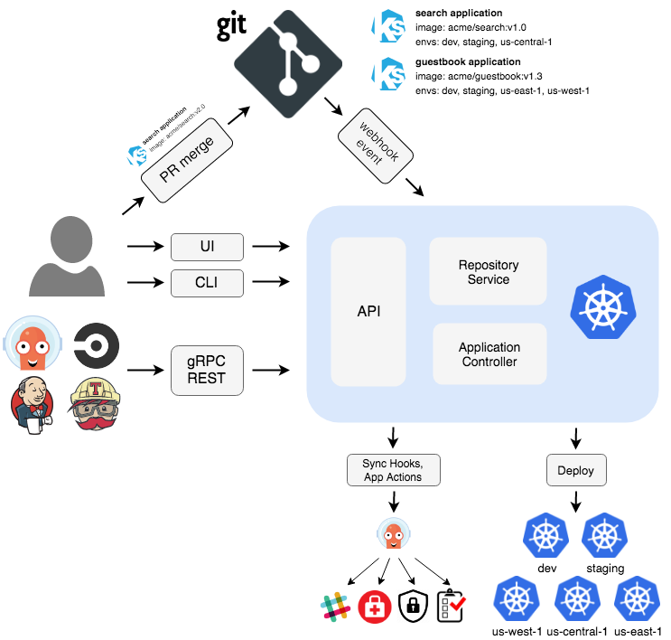

Argo cd 安装和部署
Argo cd 安装和部署
Argo CD 是一个为 Kubernetes 而生的，遵循声明式 GitOps 理念的持续部署（CD）工具。Argo CD 可在 Git 存储库更改时自动同步和部署应用程序

安装
k8s 快速安装
k3s kubectl create namespace argocd
k3s kubectl apply -n argocd -f https://raw.githubusercontent.com/argoproj/argo-cd/stable/manifests/install.yaml
安装 Argo CD CLI
Argo CD CLI 是用于管理 Argo CD 的命令行工具,Mac 系统可以直接使用 brew install 进行安装
brew install argocd
发布 Argo CD 服务
默认情况下， Argo CD 服务不对外暴露服务，可以通过 LoadBalancer 或者 NodePort 类型的 Service、Ingress、Kubectl 端口转发等方式将 Argo CD 服务发布到 Kubernetes 集群外部。
通过 NodePort 服务的方式暴露 Argo CD 到集群外部
kubectl patch svc argocd-server -n argocd -p '{"spec": {"type": "NodePort"}}'
查看端口
kubectl get svc -n argocd
使用

获取 Argo CD 密码
默认情况下 admin
帐号的初始密码是自动生成的，会以明文的形式存储在 Argo CD 安装的命名空间中argocd-initial-admin-secret 的 Secret 对象下的 password
kubectl -n argocd get secret \
argocd-initial-admin-secret \
-o jsonpath="{.data.password}" | base64 -d
命令行可以使用以下方式登录
argocd login <节点 IP>:<端口>